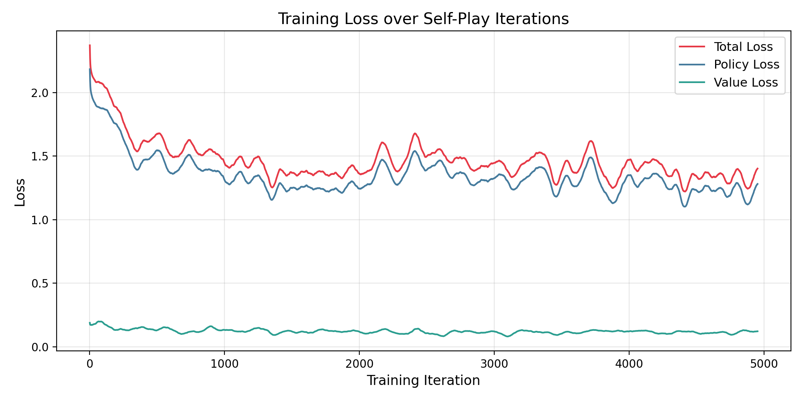
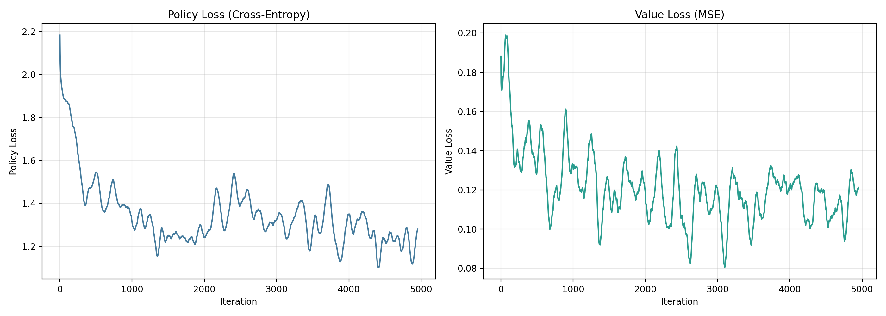
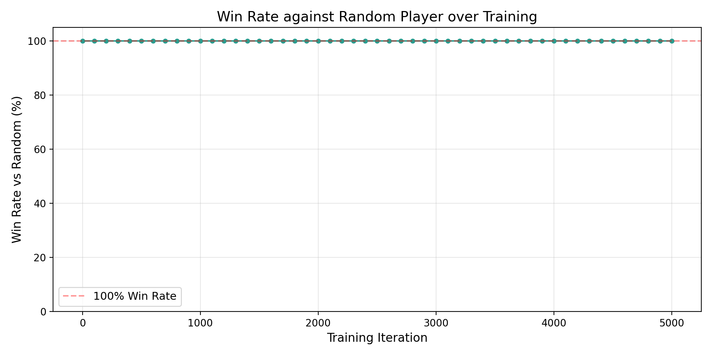
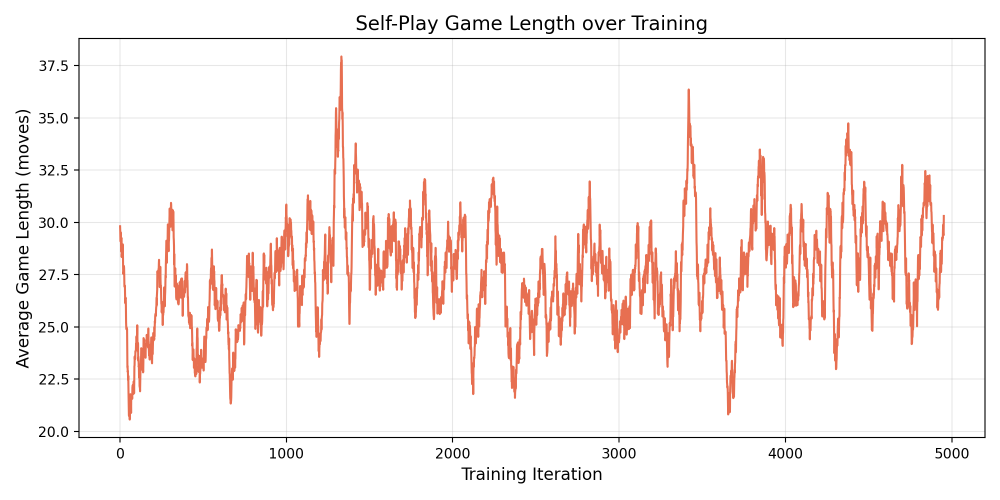

An AlphaZero‑style reinforcement learning agent that learns to play 9×9 Gomoku entirely from self‑play. A ResNet policy/value network guides Monte Carlo Tree Search via PUCT, and the resulting (state, π, z) tuples are recycled into supervised learning signals through a replay buffer. The whole system was built from the environment up — board logic, win detection, MCTS, training loop and evaluation — with no external game library.
Architecture
- Policy/Value ResNet — 5 residual blocks · 128 channels · ~2M parameters · shared trunk with separate policy & value heads.
- MCTS with PUCT selection (c_puct = 4.0) and 200 simulations per move; Dirichlet noise (α = 0.03) at the root for exploration.
- Self‑play loop produces (state, π, z) data; 8‑symmetry augmentation (4 rotations × 2 reflections) per position.
- Replay buffer of 50K positions, batch size 256, Adam (lr 2e‑3), policy CE + value MSE + L2 regularisation.
Highlights
- Built end‑to‑end from scratch: game environment, MCTS engine, neural network, training pipeline and evaluation harness.
- Clean prediction API: predict(board) → (x, y), making the trained agent reusable as a drop‑in opponent.
- Evaluation suite plays the trained network against random and greedy baselines and visualises training curves.
Skills & Technologies
- Reinforcement Learning (AlphaZero / Self‑Play)
- Monte Carlo Tree Search (PUCT)
- PyTorch · ResNet
- Replay Buffer & Data Augmentation
- Game AI & Search
Gallery




